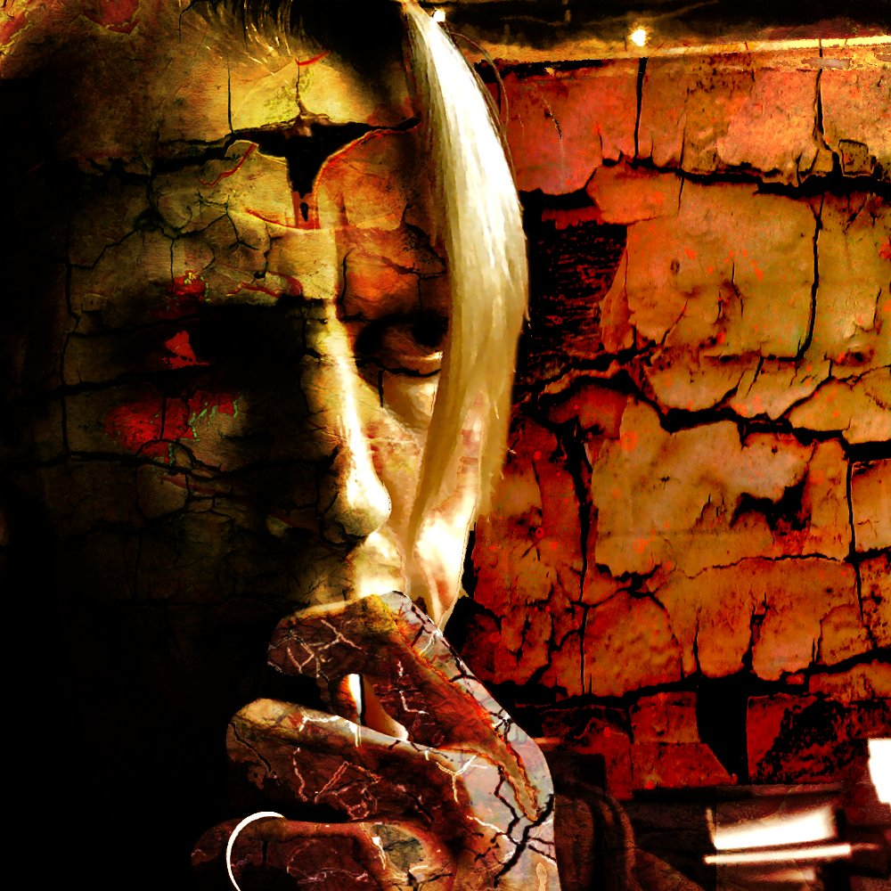
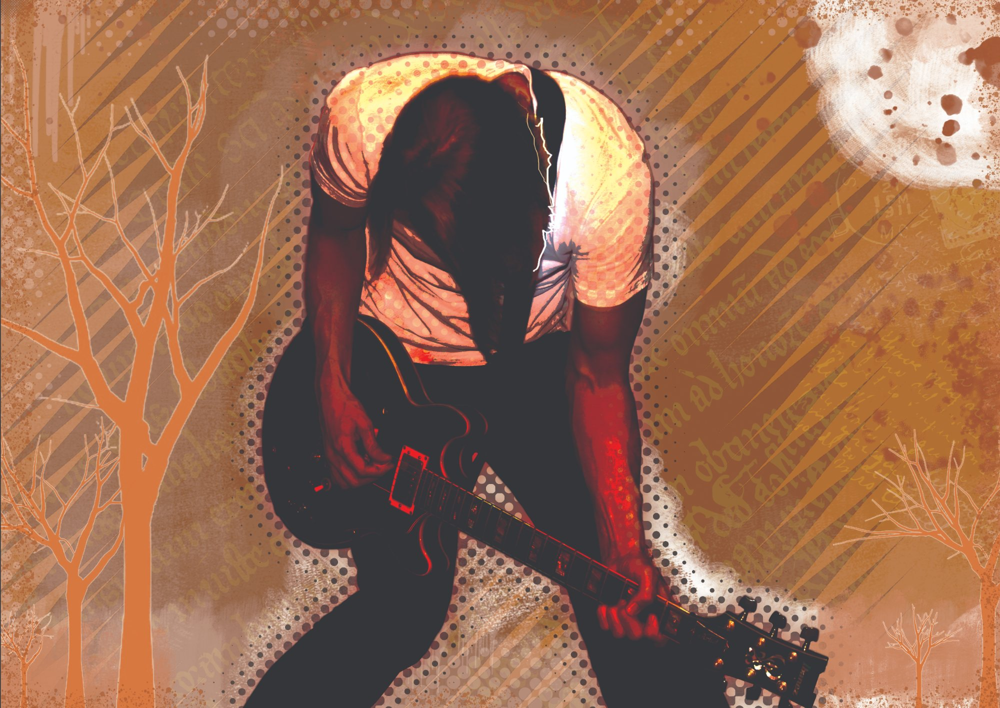

An ongoing musical experiment of joe Wilford


Open some doors. More than twenty years of material make up the roadmap of the Dedalus project: a path with many turns and several routes, and no clear destination beyond the experience of creative discovery. The journey is without maps. The dream and the bliss within the soul are the flame that drives the search. Welcome.
Five songs. Five labyrinths. No escape.
In the 18th century, the Italian architect Giovanni Battista Piranesi etched his Carceri d'invenzione, the Imaginary Prisons: vaulted chambers, stairways that lead nowhere, machinery without purpose. They were beautiful and terrifying. Piranesi, the newest Dedalus release, borrows those impossible architectures as its blueprint. Each of its five songs follows a character trapped in a labyrinth of their own, built from myth, magic, love, betrayal and loss.
All words and music are by joe Wilford, who also adds guitars, vocals, bass and keys. Rowan Bishop mixed Rosabelle Believe and Curse of Pasiphae at Garage Mahal Recording in Westbrook, Maine. Piranesi is the darkest and most theatrical record in the Dedalus catalogue so far, and its characters meet the fate this whole project has circled for two decades: the maze, its chambers and the long walk through its cavernous halls.
Piranesi will be released October 30, 2026, on Bandcamp, Spotify, Apple Music and all streaming platforms.
Labyrinthine Horizons (single) was released December 19, 2025.
A Thread in the Labyrinth is a full-length album of guitar instrumentals, released one song at a time from December 21, 2021 to December 1, 2022: thirteen tracks over two years. “The record is a project I've been wanting to do for years.” Each song tells a different story in its own sonic landscape. Wilford worked with a lot of super talented drummers and with go-to sound guru Rowan Bishop on selected tracks.
An Iowa native, joe Wilford spent more than fifteen years finding and then redefining his sound in the competitive club scene of New York City's Lower East Side. A raconteur-de-force with a 12-string guitar, he played in a wide range of projects, including The Poetry Revolution, Logic Downwards and, most notably, the Trailside Rangers. They played well-known venues across the tri-state area, including CBGB's, Rodeo Bar and The Continental. The Rangers earned critical acclaim, released three independent records and drew generous college-radio airplay across the US and abroad, but they never took their indie status to the next level. After eight years they disbanded peacefully in 1999 to pursue other musical avenues.
Eventually Wilford found his way back to the heartland and the vibrant music scene of Eastern Iowa. There he keeps writing, recording and experimenting across a range of genres: acoustic rock, black metal dirges, gypsy flamenco guitar instrumentals, and ambient electronica threaded with dubstep beats, darkwave tones and cinematic soundscapes.
Invocation (2012) is a sonic collage of electronica, darkwave and dubstep, full of literary and film ghosts. McCarthy's The Road appears in Jackstraw Land, Moby Dick in Ishmael and Alan Moore's Watchmen in Luna Jungle (Ozymandias remix). Baum's Oz appears in The Great & Terrible and Logan's Run in LastDay. The epic Samsara weaves vastly different styles into a single story of longing and lust.
Wild Angels (2010) takes a more straightforward path, but no less tortured a one. It has ten smoldering soliloquies, fraught with abstract gloom and apocalyptic drones, and features some of Wilford's most restrained vocals. The songs are radiant in their ability to find the beautiful within the bitterly cruel.
Santiago – se unio~ (2007) is an experiment in gypsy flamenco with a twist of Americana. It pairs Latin-inspired beats with singed melodies drawn from red desert dust and the nylon strings of a classical guitar.
A Portrait of the Artist (2004) has nine songs, each a personal tribute to Tom Gallison, Wilford's long-time friend, who tragically died in February 2000. The songs echo sadness and loss, and they also celebrate the creative spirit that inspired everyone who knew him.
Dedalus is the artistic persona of joe Wilford: storyteller, songwriter, musician, magician and worker of wood. Much of that wider world lives in Labyrinthine Letters, a creative portal and archive of poems, lyrics, stories, handmade boxes and explorations of the dark arts. Art is a maze. Lose yourself. Next on the horizon is Lord Jim, a musical stage adaptation of the Joseph Conrad novel.
The journey is still without maps. Open some doors. Welcome.
Released October 30, 2026
Sky Woman · Curse of Jaxx! · Rosabelle Believe · Betrayer Moon · Curse of Pasiphae
Listen →Released December 19, 2025
Thirteen tracks released incrementally, from Point Xero (December 21, 2021) through Blood & Brine redux (December 1, 2022). A full-length album of guitar instrumentals, each song a different story with a unique sonic landscape.
Blood & Brine · Letters from Wolferl (2020) · Ballad of a Country (2018) · Winterland Skies -or- Morning Star brings the Light (2017) · Shimmer · Vengeance Reckoning · Sol · Mist (2016) · Cellophane (2015) · Forsaken Lives (2013)
Jackstraw Land · Invocation · Mercurial · Trust · The Great & Terrible · Distance · LastDay · Io · Luna Jungle · Ishmael · Samsara · Positronica
Fuse · If we were all suddenly somebody else · Soulsmith · So it goes · How to tell a true war story · Accidental History · Ash · Walk while ye have the night · Victory · Yes I will, I said
se unio~ · Lords of LaMancha · la cancion para el coronel · Chupacabra que se rie · Radio Cervantes' · Sancho's remix
Intro - Exeunt · Curtain Falls · You were like that · Freda's House · Tragedy · Steuben Plays Piano · Come up, Kinch · Faintly Falling · Curtain Falls Reprise